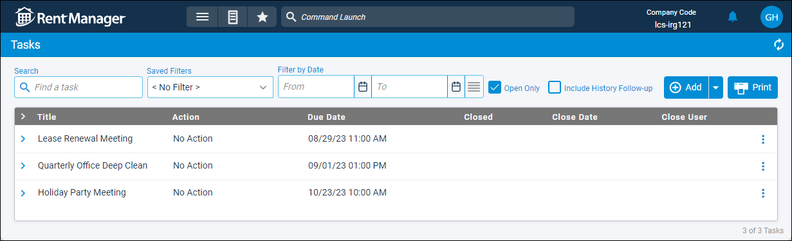

Source: https://rmxhelp.rentmanager.com/Topics/Express/CSH/Tasks.htm
Tasks (Page)
Tasks are one-time or repetitive actions that you create to help you maintain and keep track your busy schedule directly from Rent Manager.You can even create tasks to recur on a daily, weekly, monthly, or annual basis. You can then easily view or access your tasks on your dashboard Tasks tile.
Related Privileges
| Group | Privilege | Column |
|---|---|---|
| Setup | Tasks | View, Edit |
For more information, refer to Control User Access.
To view and manage tasks, go to  arrow_forward Services arrow_forward Calendar arrow_forward Tasks.
arrow_forward Services arrow_forward Calendar arrow_forward Tasks.

Filter Options
The following filtering options are available.
| Filters | Descriptions |
|---|---|
|
Search |
Enter the desired search criteria to display results with a Title that matches the search criteria. |
| Filter by Date |
Select or enter the From and/or To dates to filter notes created during the selected dates. Click Click |
|
Open Only |
Select to include only open tasks in the list. |
|
Include History Follow-up |
Select to display tasks that were created as a result of a Follow-up Date being entered on a history/note. |
Column Descriptions
The following columns are available on this page.
| Column | Description |
|---|---|
|
Title |
The name of the task as it appears on the Tasks page and on the Tasks dashboard tile. |
|
Action |
The action Rent Manager takes, as selected in the Actions drop-down list. If none are selected, No Action displays. |
|
Due Date |
The date by which the task should be completed and closed. |
|
Closed |
A |
|
Close Date |
The date on which the task was closed. |
|
Close User |
The username of the person who closed the task. |
|
Reminder Date |
The date and time for which a reminder notification has been set. |
Row Actions
The following row actions are available from the  menu.
menu.
| Option | Description | ||||||
|---|---|---|---|---|---|---|---|
|
Details |
View or edit task details. |
||||||
|
Delete |
Related Privileges
For more information, refer to Control User Access. Delete a task from the page. |
||||||
|
Close Task |
If you are viewing a task, you can close the task to remove it from active tasks list. Once a task is closed, you can select Reopen Task to make it active again. More Information If a task is a step in a workflow project with the option Steps must be completed in order selected, it cannot be closed if there are unclosed steps preceding it. For more information, refer to Workflow Project Details (Page). |